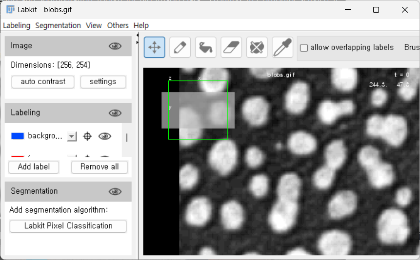

Installing ImageJ/FIJI#
Download FIJI Package#
Download FIJI package from the software site FIJI has pre-installed plugins and is recommended for this lab. Download it at https://imagej.net/software/fiji/downloads. Look for the zip folder and extract the contents to the desired location on your computer. Keeping it in “Program Files” is generally not recommended to avoid access/security issues.
Installation#
We’re going to run the new Jaunch launcher, because it runs faster and allows running without security popups. If it doesn’t show up within two minutes of running, then run the backup launcher.
Windows#
Right-click on
fiji-win64.zipand choose Extract All… toDownloads\(avoid placing it inProgram Files).Open the
Fiji64.appfolder.New launcher: Run
Fiji-windows-x64.exein that folder.Running for the first time may take about 60 seconds.
Backup launcher: Run
ImageJ-win64.exein that folder.
Linux#
Unzip
fiji-linux64.zip:unzip fiji-linux64.zip cd Fiji.app/
New launcher:
./fiji-linux-x64
Backup launcher:
./ImageJ-linux64
macOS#
Double-click
fiji-macos.zipto extract.(Optional: copy
Fiji.appto Desktop.)Right-click on
Fiji.app, choose Show Package Contents.You will see a folder containing another
Fijiicon inside it.
Double-click the secondFijiicon to launch.If it doesn’t work, see backup instructions below.
Backup Instructions for macOS#
Double-click
fiji-macos.zipto extract.(Optional: copy
Fiji.appto Desktop.)Try opening
Fiji.app. This will likely be rejected by macOS for security reasons.Open Apple Menu > System Settings.
Search for Gatekeeper.
You should see the text
“Fiji.app was blocked…”_ → click Open Anyway.Enter your password or use your fingerprint if prompted.
Click Open.
After this, you should be able to openFiji.appdirectly.
A Side Note on Updating#
When using FIJI, it is recommended to use Help > Update rather than Help > Update ImageJ.
Update ImageJ will specifically update only the base ImageJ package within FIJI, not the associated plugins.
This makes it more likely that you will run into version issues and other update problems.
Generally, updating when prompted upon opening FIJI will also help prevent issues.
Install Plugins with Update Sites#
After running Help > Update, there will be an option to Manage Update Sites.
This provides access to common plugins that are compatible with FIJI. Use the checkbox to add a plugin, then click Apply and Close.
Click Apply Changes, then restart FIJI.
You should now be able to search for and run the plugin.
Downloading a Practice Dataset#
The complete list of files may be downloaded at the following links:
Google Drive: https://drive.google.com/drive/folders/1lgn-S5fZZZX0mwou23S_f6d3dG2Di64g?usp=drive_link
Common Keyboard Shortcuts#
Shortcut |
Action |
|---|---|
|
Zoom in |
|
Zoom out |
|
Focus search bar |
|
Save |
(No shortcut) |
Save As |
|
Adjust Brightness and Contrast |
|
Color channel control |
|
Undo |
|
Open Histogram |
|
Plot / Line Profile |
|
Measure |
|
Threshold |
|
Draw straight lines |
|
Change current selection size |
|
Open ROI (Region of Interest) Manager and add current selection as ROI |
|
Close all windows |
Also Helpful#
Window > Tile
Montages all open images/windows.Image > Transform
Flip or rotate images.Help > Update
Update FIJI.Enter (when focused on an image)
Surfaces the ImageJ main toolbar window.# Getting Started, Opening an Image
The easiest way to open a data set is to click-and-drag from the folder. However, some file types need to be specifically imported. To import a sequence of images that are saved within a folder, you can use the File > Import > Image Sequence option to open them as a stack or as separate images. Additionally, using a Virtual Stack in the Bio-Formats Importer may be useful if trying to view large data files. This makes it easier to get a quick look at data when there is limited RAM. However, if you need to perform an image operation, such as background subtraction, then more memory will be required as the data needs to be loaded.
Note
üí° Pro tip: Press Ctrl + L (Windows) or Command + L (Mac) to jump straight to the search bar.
This can access nearly any menu command or plugin, usually faster than using the menus!
Starting with a basic image#
Open “blobs.gif”, via File > Open Samples > Blobs, or Ctrl + Shift + B
Inspecting Images#
Hover over an area in the image.
In the status bar of Fiji, you should see the pixel you are on, with XY coordinates, and its associated value.In an RGB type image, Fiji will also tell you the associated color values for the red, green, and blue channels.

To see a larger area, use the Pixel Inspection Tool:
In the Fiji window, click the Pixel Inspection icon.
If the icon is not present, you can use the double red arrows to add the icon, by opening the list and selecting Pixel Inspector.

This brings up a window of pixel values that can be moved around the image.
To adjust the parameters of this window, click Prefs.
This can be used to adjust the size of the window.
Inverting the Background#
Sometimes the background may be white instead of black, depending on what you are interested in within the image.
The color scheme can be inverted by selecting LUT > Invert LUT.
Note: if you use Edit > Invert, this will invert the actual image and change the pixel values themselves, which may not represent the original data.
Changing the Color Scheme (LUT)#
A Lookup Table (LUT) controls the colormap of the images. This can easily be changed using the LUT button in the toolbar. Try a few LUTs and see how the information in the background and foreground changes.
Using Image > Colors > Display LUTs will display different types of LUTs.
It is also helpful to include a scale/calibration bar when changing LUTs.
This can be added with Analyze > Tools > Calibration Bar.
Colorblindness Consideration#
To test how different images may appear to those with colorblindness, you can use the Simulate Color Blindness plugin if you have an RGB image.
mpl-viridis can be a good option as it is designed to be perceptually uniform (see https://imagej.net/imaging/visualization).
As a separate note, it may also be helpful to test any publication figures (images or
otherwise) in grayscale, to see what color information may be lost if the paper is printed in
grayscale.
In many cases, it may be more practical to develop images/figures in grayscale,
especially for presentations, and it is still a valid representation of the data.
Plot/Line Plot#
To see graphically how the pixel values vary across the image we can use the plot tool.
This can be very useful for determining how much noise is in the background of an image, or for finding the width of an object, such as a point spread function.
Draw a line or rectangle across the image, using the tools from the toolbar:
Press Ctrl + K to display the profile along the line.
The Live button in the plot window can be used to create an active plot that changes when the selection in the image is changed.
Here we can clearly see the increase in signal intensity across the three selected blobs.
Since this is a rectangular selection, the values are averaged across the height of the rectangle.
In comparison, the plot of a single line shows similar intensity changes when carefully drawn through the three blobs, but the plot is noisier and more sensitive to where the line is placed.

Opening and viewing a Z-Stack#
Open “t1-head.tif”, via File > Open Samples > T1 Head (16-bits).
Use the bar to scroll through the stack of images
We can also display the orthogonal view by using Image > Stacks > Orthogonal Views or Ctrl/Command + Shift + H
The yellow crosshairs can be used to change the display for each orthogonal view, but one has to close the orthogonal view to select images.
To select from an orthogonal view, try reslice, in Image > Stacks > Reslice or press \ (backslash) when the image is in focus.
Hyperstacks#
Hyperstacks are multidimensional data, such as a multichannel timeseries or z-stacks.
Start by opening the “hela_infected_timeseries.tif” image. This is available for download at: https://media.imagej.net/workshops/data/3d/
If internet access is unavailable, the
Mitosis (5D stack)sample from File > Open Samples works, too.
Duplicate A Channel Or Image#
Use Image > Duplicate to bring up the duplication options window. This can also be done with Ctrl + Shift + D or Right Click > Duplicate. Here, we can specify which RGB channels and timepoints we want to separate. If we use 1-2 in the channels menu, it should produce an image of just the red and green channels. The duplicate hyperstack box should be checked. (If you are using the mitosis image, try choosing just one value for the color channel.)
Changing Channel Colors#
To change the display color of channels, use Image > Color > Channels Tool or Ctrl + Shift + Z.

Note: The “more” option can be used to apply colors to the selected channels.
3D Volume and Projections#
Open
t1-head.tif, File > Open Samples > T1 Head (16 bits)To display the 3D Volume, use Image > Stack > 3D Projection > Click ok In the 3D projection dialogue box, there are various options for projection including axis of rotation and setting the slice spacing (step size) which may be useful for known parameters.

Additionally, the original image stack may be projected along one axis using Image > Stacks > Z Project. It is important to note that the information in the projection is highly dependent on the display parameter. A few examples are shown below (left to right: single slice of the stack, average projection, median projection, max projection).
Changing Image Types, cautiously.#
Some operations - especially image math operations - only work on images of a certain type, and sometimes we desire images of a certain type. For example, if we want to multiply two 8-bit images, it would be prudent to first convert them to 16-bit images so the output is to a 16-bit image and does not overflow.
However, changing the image type through Image > Type can result in the loss of information as we will see in the next example. Not all image types can be converted back to the original. The following error is likely to display if you are not able to complete a type conversion.
Bit Depth#
Open the
m51.tifimage, Open > Open Samples > M51 Galaxy (16 Bits).Adjust the contrast so we can see the image a bit better. Image > Adjust > Brightness and Contrast.
Make a histogram of the image, Ctrl + H, and notice the scale of the histogram and the mean value. Keep this window open. a. 16-bit images have a maximum value of 65,536.
Convert the 16 bit image to an 8 bit image, Image > Type > 8 bit. a. 8-bit images have a maximum of 256 values. This means the data resolution and range is lower compared to a higher bit depth, so the data is compressed.
Make another histogram and keep the window open. How did the values change?

Adjusting Brightness and Contrast#
Changing the contrast in an image can be a good visualization tool. Using Ctrl + Shift + C or Image > Adjust > Brightness and Contrast will display the B&C menu. Using Auto or the B&C sliders changes the look up table (LUT), which does not change the pixel values. This is good for visualization, but using the Apply button will change the pixel values, which generally should not be done.
Set Scale and Scale Bars#
If the size per pixel is known, such as from a microscope calibration, this can be used to change the image dimensions from pixels to the known field of view.
Use Analyze > Set Scale to enter the known distance.
For example, an image with a pixel size of
0.73 pixels/micronwould be entered as shown, using “um” or “micron”.
Further info for setting the scale based on a measurement in an image can be found here:
https://serc.carleton.edu/eyesinthesky2/week2/get_to_know_imagej.html
To add a scale bar, use Analyze > Tools > Scale Bar.
Accessing Image Metadata#
Basic Segmentation#
For this section, we demonstrate with the embryos sample.
Background Subtraction#
Oftentimes the background illumination is not uniform, and this interferes with intensity-based thresholding. Fiji includes multiple methods to perform background subtraction in ImageJ, including Process > Subtract Background, Mean/Median Background Subtraction, or Gaussian Blur Subtraction. If you are not planning a quantitative analysis, Enhance Local Contrast (CLAHE, Contrast Limited Adaptive Histogram Equalization) may also be worth a try.
Left to right: original, background subtracted, with CLAHE.
However, any background subtraction used to process images should be carefully considered in relation to the original source of noise, how the image information is used, and any further processing or quantification of the image.
In some cases the Subtract Background plugin, or other methods, can also introduce artifacts that are not present in the original image.
Some Image.sc forum discussion here:
https://forum.image.sc/t/consensus-on-subtract-background-built-in-or-other/7061
Segmentation / Thresholding#
For this section we will open up blobs again: Ctrl-Shift-B
If we want to segment out the blobs we are interested in, one possible method is to use an intensity threshold. First, let’s look at the histogram of the intensity values using Ctrl + H.
We can see that most of the background pixels have an intensity value around 50, whereas there is another grouping of pixel intensities around 210, which is likely the areas we are interested in because this image has a white background. Notice that the values are stretched outwards; this indicates that the original range was likely very small or somehow adjusted.
Use Image > Adjust > Threshold to see the automatic threshold applied based on the original histogram.
This seems to segment the blobs pretty well. You can change the slider bars to see how the segmentation changes as the threshold moves.
When ready, click Apply to create the binarized mask. Notice that the blobs now have a value of255, and the background has been set to0. This represents a permanent change in the image values, so going forward, most quantified analysis involving pixel values must be performed by applying the segmentation as a mask on the original image (see [Masks] section).

There is also an Auto Threshold option under Image > Adjust > Auto Threshold, that you can use to compare different methods of thresholding. It is easiest to see the comparisons using the Try All method.
Morphological filtering#
Often the mask of the particles will pick up a lot of noise, and it is useful to filter them. The morphological operations Erode and Dilate from the menu Process > Binary can be combined in sequence to remove noise. When Erode is run first, the sequence is called Open, and removes small objects and speckle noise. When Dilate is run first, the sequence is called Close and fills small holes or gaps between mask objects.
Splitting chunks by watershed#
Often two smooth convex objects (cells!) will be touching and thereby detected as part of the same mask element. Watershed segmentation or Process > Binary > Watershed splits masks by drawing a narrow channel at narrow bottlenecks. This is useful for separating cells that were identified as part of the same mask.
Adding Selections to ROI Manager#
Press
Tto open the ROI manager.Use Edit > Selection > Create Selection to select all of the blobs based on the current threshold.
In the ROI Manager window, use More > Split to divide the selection into multiple ROIs.
You can click on the regions to see the specific blob it corresponds to.
If needed, the selected regions can be saved in a file and reopened later using More > Save.
One can also add selections to the ROI manager manually, if there are only a few objects to segment or if thresholding segmentation does not work for your sample.
Analyze Particles#
The Analyze Particles function can be useful for applying size exclusion or removing any blobs that are below our desired size threshold.
For example, we can see some smaller red circles in the image that may represent noise rather than a full blob we are interested in.
This can be especially useful if we have a biological problem, such as segmenting cells, where we know the cells must be above a certain size.
Open the ROI manager by pressing
T.If there are previous ROI selections that you would like to remove:
Click on the first one, hold
Shift, then click on the last one.Press
Deleteto clear them.
Use Analyze > Analyze Particles to open the function window.
Size can be used to determine what blobs are included. For example, specify
"30-Infinity"to remove smaller blobs.For many biological applications, it’s best to know the size of the pixels to understand how much area is excluded, and whether it corresponds to the expected size based on the experiment.
Ensure the Add to Manager box is selected to add the ROIs to the ROI manager.
For the Show dropdown, select Masks to display the following:


> Notice that some of the blobs that are present in the binarized image, like the one next to number 29, are not included in the mask.
Masks for Measurement#
Once you have a mask or the desired image, use Edit > Selection > Create Selection to add the regions to the ROI manager.
After selection, you can also use Edit > Selection > Create Mask to make a mask of the desired areas if the image is not already binarized.
To copy the ROI selection onto the original image:
Click on the mask while the selection is open.
Then click on the original image and press Shift + E or use Edit > Selection > Restore Selection.
#
Making Measurements#
To set the desired measurements to be collected, use Analyze > Set Measurements.
This window will determine what results are displayed or saved from the image.
To create the measurements:
Use Analyze > Measure or Ctrl + M, while the desired image is active.
This may produce one measurement for the whole image if an ROI is not active.
To measure all ROIs at once, use Measure in the ROI Manager.
The checkboxes for Show All and Labels can be useful to see what regions are being measured.
If you want, use Edit > Selection > Make Inverse.
This will now select the entire background.
You can measure again to get the value for the background.# Basic Registration
Stitching Images#
There are multiple ways to stitch images using the Grid/Collection Stitching plugin, including with metadata or file position.
Open the Grid/Collection Stitching plugin.
In this example, use Grid: snake by rows with the order of Right & Down.
In the dialogue box, specify the following parameters:
Grid size:
x = 3,y = 3Tile overlap [%]:
0
(This is a known value — the image we are stitching was part of a larger image. In an experimental context, this may be part of the image acquisition settings.)First file index:
1Directory: point to the
Leaf_stitchfolderFile name:
leaf-{i}.tif{i}specifies where in the filename to iterate through values.If this is written as
{ii}, there will be an error because the first file is1, not01.
Uncheck the Compute overlap box, since the overlap value is known.

Also try re-running the plugin with an overlap value of 10%.
Notice how there are errors near the borders of the leaf and on the ruler (especially the faded “9” value), but errors at the center of the leaf may be harder to spot.
This is why knowing the expected overlap value is important, as spotting errors in experimental data may be difficult.
In many cases, using stitching information from the image metadata is more helpful, because the position information comes from the microscope.
Scripting#
Scripts can be generated in a variety of ways, including the Macro Recorder.
For functions included in the ImageJ Macro language, please see:
https://imagej.net/ij/developer/macro/functions.html
More general scripting info:
https://imagej.net/scripting/
Macro Recorder#
https://imagej.net/scripting/macro
Use Plugins > Macros > Record to start recording simple steps and begin generating code. Note that when clicking around in FIJI, you may generate unnecessary or overly specific commands, which means macros generated through the recorder will typically require some editing before use on other images.
For example:
Open Blobs via File > Open Samples > Blobs
Draw a circle or rectangle using the tools
Run Process > Find Edges

More example scripts:
https://imagej.net/ij/macros/
Why does the recorder not show a response for all plugins?#
Not every developer has made the plugins compatible with the macro recorder, which may cause various bugs or a lack of response from the recorder. In some cases, a script may be used to generate similar functionality, but other times this may just be a limitation of the plugin. The Image.sc forum would be a good resource for help if you are able to provide enough information about the error and the analysis goals.
 #
#
Batch Processing#
Batch processing can be done directly via the macro script editor using a provided template: https://imagej.net/scripting/batch#option-2—script-template
Open the script editor: Plugins > New > Macro
The template can be accessed in the script editor by using Templates > ImageJ 1.x > Batch > Process Folder (ImageJ Macro)
This template contains an existing loop to process each file in the folder using the “processFolder” and “processFile” functions. It requires the user to specify the input and output directory as well as the file information.
When you are inserting the macro recorder script into the bottom function, remember to open and save the file using the
open()andsaveAs()functions.
The benefits of this is that the files can be more specifically iterated if needed with minor adjustments to the code. For example, try changing
i++toi = i + 2to process every other file.
Deconvolution#
Deconvolution is a method of denoising a microscopy image using information about the optical setup. In this case, we estimate a point spread function for the deconvolution using the user input parameters of numerical aperture, resolution, emission wavelength, and refractive index.
A Fiji macro developed by Ed Evans is available here:
elevans/fiji-scripts
More background on the algorithm (Richardson-Lucy + Total Variation Regularization):
https://doi.org/10.1002/jemt.20294
Copy-paste the code into the script editor, or open the
.groovyfile. Change the script language to Groovy, then run the script on the selected image.
A dialog will prompt for the experimental parameters. Enter the known parameters from the experiment (or for the demo use the default values).
Example: Try with Cell Colony (FIJI Sample) and default parameters to see a demonstration.
You’ll notice sharper edges and reduced background noise — even though the parameters may not match the real imaging conditions.
Background Subtraction – Gaussian Filters#
Performing background subtraction with a Gaussian filter can be an effective method of resolving objects from a noisy background. More info here: https://bioimagebook.github.io/chapters/2-processing/4-filters/filters.html#gaussian-filters

Background Subtraction - Gaussian filters Performing background subtraction with a gaussian filter can be an effective method of resolving objects from a noisy background. More info here: https://bioimagebook.github.io/chapters/2-processing/4-filters/filters.html#gaussian-filters
Use File > Open Samples > Neuron (5 channel) to open the starting image. We only want one channel to work with, so right click and duplicate channel 4.
Try a variety of thresholds on this image, including the triangle method. Here we will try to improve this threshold by separating out the smaller point-like structures.
Open the gaussian subtraction script found here, developed by Ed Evans:
(Download raw file in GitHub.)
Open this in Fiji to open the Macro Editor, or open the Macro Editor via Plugins > New > Macro
This script is written in python, so be sure to change the macro language to python before running, otherwise an error will be produced:
With the single channel image highlighted, run the script. You should be prompted to input a sigma value for the gaussian filter. Larger values will blur out larger and larger objects. For this example, use 20 and then use 1. Feel free to try a variety of values to see how the results change.
After running the script, we now see that some structures are highlighted a bit differently in result (V) (notice how the cell body is harder to see)
Some structures are highlighted differently.
The cell body may be less visible, while smaller axons or dots stand out more.

After running the script, we now see that some structures are highlighted a bit differently in
result (V)(notice how the cell body is harder to see):
If we decide this mask is sufficient for our data, we can then apply the mask to the output image and merge the display. a. With the output image still selected, choose Apply on the threshold window, while making sure the dark background box is selected. It then will ask you to convert the output to an 8-bit mask. i. The areas of interest should now have values of 255 while the background has a value of
0. If this is inverted, it is likely that the dark background box in the threshold window was not selected, you can simply use Edit > Invert to switch the values. b. To overlay the mask on the original image, we can make a composite. This requires that the original image is also converted to 8-bit for display. Use Image > Type > 8-bit
c. To make the composite, use Image > Color > Merge Channels. Here, I will set the original channel duplicate to C4 (gray) and the mask to C2 (green). This should procedure the following composite image, that can be used for display:

d. As an additional display, we could use Edit > Selection > Create Selection on the mask image, then Edit > Selection > Restore Selection on the original image to get outlines of the mask.
If we use a sigma value of 1 and repeat the process, we can see there a further differences in the cell body and other structures, although this seems to also pick up more noise:

TrackMate – Example from documentation#
Ershov, D., Phan, M.-S., Pylvänäinen, J. W., Rigaud, S. U., Le Blanc, L., Charles-Orszag, A., …
Tinevez, J.-Y. (2022). TrackMate 7: integrating state-of-the-art segmentation algorithms into tracking pipelines. Nature Methods, 19(7), 829–832. doi:10.1038/s41592-022-01507-1
TrackMate documentation and tutorials:
https://imagej.net/plugins/trackmate/
TrackMate manual:
https://imagej.net/media/plugins/trackmate/trackmate-manual.pdf
The following demo can be accessed here: https://napari.imagej.net/en/latest/examples/trackmate.html
Open the
trackmate_example_data.tif.Run the TrackMate plugin (Plugins > Tracking > TrackMate). Select “Next” as we don’t need to make any changes. The settings in this window allow you to crop the original data as needed.
Use the Laplacian of Gaussian (LoG) detector. The plugin provides various algorithms to help process the image, also including the difference of gaussian and hessian detectors.
Enter 17 as the estimated object diameter and 0 as a quality threshold, “Next.”
The next page provides a summary. Select “Next.”
For Initial Thresholding, verify you see 1496 spots selected, and select “Next.”
Select “Next” as we do not need a filter. If a filter was required, we could use the “Plus” button to add a filter and adjust the selection metric.
Use the “Simple LAP tracker”, then select “Next.” TrackMate also provides a variety of other methods.
Then we set the parameters for the tracker. The linking max distance will be 8.3 microns, the gap-closing max distance is 5 microns, and the gap-closing max frame gap is 2 micron. Select “Next.”
A summary page is displayed. You can scroll through the image and see the proposed tracks for each cell. Select “Next.”
Select “Next” three more times as we will not filter any of the tracks and do not need to edit the display options.
Select “Execute” for the final image, which can be run over all of the frames.
Labkit Segmentation#
https://imagej.net/plugins/labkit/
Arzt, M., Deschamps, J., Schmied, C., Pietzsch, T., Schmidt, D., Tomancak, P., … Jug, F.
(2022). LABKIT: Labeling and Segmentation Toolkit for Big Image Data. Frontiers in Computer Science, 4. doi:10.3389/fcomp.2022.777728
Labkit uses a pixel classifier to create image segmentation. This requires labeling the foreground and background of an image.
Open Blobs with File > Open Samples > Blobs. Then open Labkit using Plugins > Labkit > Open Current Image with Labkit.

The Labkit window will automatically load the selected image. Next, use the pencil tool to draw a line on a few pixels that are background (blue) and foreground (red).

Now, we can run the pixel classifier to segment the image. Use the “play” button for the specific classifier within the segmentation part of the window.

This should produce a classified image similar to the one shown below with blue as the background and red as the object of interest.
The classifier can be saved and applied to multiple images. Click on the settings button on the classifier to save either the classifier or the image results.
 # Other Resources
# Other Resources
Introduction to Bioimage Analysis (Pete Bankhead):
https://bioimagebook.github.io/README.htmlImageJ User Guide (Ferreira and Rasband):
https://imagej.net/ij/docs/guide/146.htmlIntroduction and Segmentation in FIJI (YouTube):
https://www.youtube.com/watch?app=desktop&v=CZExS_mkGsQImageJ Tutorials:
https://imagej.net/imaging/COBA: Center for Open Bioimage Analysis (YouTube):
https://www.youtube.com/@cobacenterforopenbioimagea1864/featuredScientific Figure Making with Fiji and Inkscape (Jan Brocher):
https://www.youtube.com/watch?v=F6ll37NOgXcImageJ Documentation: Built-in Macro Functions:
https://wsr.imagej.net/developer/macro/functions.htmlImageJ Macro Cheatsheet (Robert Haase):
BiAPoL/imagej-macro-cheat-sheetImageJ Documentation: ImageJ Ops – allows one to use other libraries (ex. OpenCV) natively in ImageJ: https://imagej.net/libs/imagej-ops/
TrackMate Information:
https://imagej.net/plugins/trackmate/StarDist Information:
stardist/stardistLabkit Information:
juglab/labkit-uiI2K Conference (YouTube):
https://www.youtube.com/@I2KConference